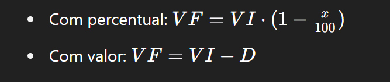
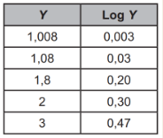

O ENEM costuma abordar aplicações práticas da matemática financeira, especialmente em situações do cotidiano. Os principais tópicos são:
Tópicos mais cobrados:
Porcentagem representa uma razão com denominador 100. É usada para calcular aumentos, descontos, comissões, impostos e outros valores relativos.
Fórmulas comuns:
É o acréscimo calculado sempre sobre o valor inicial (capital), sem se acumular ao longo do tempo.
Fórmula:J=C⋅i⋅t
M=C+J
onde:
J = juros
C = capital
i = taxa de juros (decimal)
t = tempo
Os juros são calculados sobre o valor total acumulado no período anterior (juros sobre juros).
Fórmula:M = C . (1+i)^t
onde:
M = montante
C = capital
i = taxa decimal
t = tempo
Ocorre quando se reduz o valor original de um produto ou serviço. Pode ser dado de forma percentual ou absoluta.
Cálculo A inflação representa o aumento generalizado de preços ao longo do tempo. No ENEM, pode aparecer em forma de gráfico ou como fator de correção de valores.
Acúmulo de inflação (composta):VF=VI⋅(1+i1)(1+i2)...(1+in)
É usada para ajustar valores antigos com base em taxas de inflação, juros ou índices financeiros. Pode ser feita por juros simples ou compostos, dependendo da questão.
Refere-se ao quanto uma aplicação financeira rende ao longo do tempo. Envolve comparar investimentos com diferentes taxas e prazos, geralmente usando juros compostos.
Exige analisar diferentes condições de pagamento (à vista x parcelado, taxas diferentes, prazos distintos). Envolve interpretar tabelas, gráficos ou condições de financiamento.
1. (Enem 2021) Um casal decidiu aplicar em um fundo de investimentos que tem uma taxa de rendimento de 0,8% ao mês, num regime de capitalização composta.
O valor final F a ser resgatado, depois de n meses, a uma taxa de rendimento mensal x, é dado pela expressão algébrica F = C (1 + x)n, em que C representa o capital inicial aplicado.
O casal planeja manter a aplicação pelo tempo necessário para que o capital inicial de R$ 100 000,00 duplique, sem outros depósitos ou retiradas.
Fazendo uso da tabela, o casal pode determinar esse número de meses.
Para atender ao seu planejamento, o número de meses determinado pelo casal é:
a) 156.
b) 125.
c) 100.
d) 10.
e) 1,5.
2. (Enem 2023) Uma loja vende seus produtos de duas formas: à vista ou financiado em três parcelas mensais iguais. Para definir o valor dessas parcelas nas vendas financiadas, a loja aumenta em 20% o valor do produto à vista e divide esse novo valor por 3. A primeira parcela deve ser paga no ato da compra, e as duas últimas, em 30 e 60 dias após a compra.
Um cliente da loja decidiu comprar, de forma financiada, um produto cujo valor à vista é R$ 1 500,00.
Utilize 5,29 como aproximação para √28.A taxa mensal de juros compostos praticada nesse financiamento é de
a) 6,7%
b) 10%
c) 20%
d) 21,5%
e) 23,3%
O enunciado informa que um casal pretende investir R$ 100.000,00 em um fundo com rendimento de 0,8% ao mês, utilizando capitalização composta. A fórmula dada para o valor final é F = C × (1 + x)^n, e o objetivo do casal é saber por quantos meses o capital deve ficar investido para dobrar de valor.
As palavras-chave são taxa de 0,8%, regime de capitalização composta e duplicar o capital. O uso de logaritmos é necessário para isolar a variável n na equação exponencial.
O objetivo da questão é encontrar o número de meses n necessários para que o valor final seja o dobro do capital inicial.
Agora que o comando foi analisado e o objetivo definido, vamos abordar os conceitos e conteúdos necessários.
O casal deseja saber o tempo necessário para que o capital dobre. Como o capital inicial é C = 100.000, queremos que F = 2C = 200.000. Substituindo na fórmula:
2C = C × (1,008)^n
Eliminando o C dos dois lados da equação:
2 = (1,008)^n
Agora, aplicamos logaritmo dos dois lados:
log(2) = log((1,008)^n) log(2) = n × log(1,008)Com base na tabela, temos:
log(2) = 0,30 log(1,008) = 0,003Agora que temos as expressões numéricas, vamos para os cálculos.
Temos a equação:
0,30 = n × 0,003
Isolando n:
n = 0,30 / 0,003 n = 100n = 100Ou seja, o capital dobrará em 100 meses, mantendo-se a taxa de 0,8% ao mês e sem novos aportes.
2. Letra DO valor financiado é obtido somando 20% ao preço à vista:
Preço financiado = R$1.500,00 × (1+0,20) = R$ 1.800,00
Como o valor financiado será pago em 3 parcelas iguais: R$1.800/3 = R$600,00 cada parcela.
M ➜ Montante, valor final após o juros
C ➜ Capital inicial, valor inicial
1 ➜ Garante que o valor inicial será mantido
i ➜ é a taxa de juros
n ➜ é a quantidade de tempo, geralmente em meses
Precisamos igualar o valor financiado com o valor à vista. Como se um é R$ 1800 e o outro R$ 1500? Removendo a taxa de juros, encontrando o seu valor na equação:
600/(1 + i)^2 + 600/(1 + i) 600 = 1500
O primeiro valor seria a terceira parcela, o expoente 2 indica que o juros foi retirado duas vezes. O segundo valor é a segunda parcela, retirando a aplicação do juros uma vez. O terceiro valor está inteiro porque é a primeira parcela, paga no ato da compra, portanto, sem juros (lembre-se que as parcelas foram distribuídas igualmente, estamos mudando isso justamente para encontrar a taxa de juros que as manteria iguais).
600/(1 + i)^2 + 600/(1 + i) = 900 [subtrai o 600]
2/(1 + i)^2 + 2/(1 + i) = 3 [dividi os dois lados por 300]
2 + 2 (1 +i) = 3 (1 +2i + i^2) [multipliquei os dois lados por (1 + i)^2 apliquei um produto notável]
2 + 2 + 2i = 3 + 6i + 3i^2 [fiz a distributiva do lado direito e esquerdo]
-1 + 4i + 3i^2 = 0 [passei tudo da esquerda pra direita e igualei a zero, formando uma função do segundo grau]
Bhaskara = -b ±√Δ/2a | Δ = b^2 – 4ac
Δ = 4^2 – 4 × (-1) × 3 ➜ Δ = 16 + 12 ➜ 28
X’ = -4 +√28/6 ➜ -4 + 5,29/6 ➜ 0,215
X’’ = – 4 -√28/6 ➜ -4 – 5,29/6 ➜ 9,29/6 ➜ -1,54833… (taxa negativa não existe)
Assim, a taxa mensal de juros é 21,5%, pois 0,215 = 21,5/100